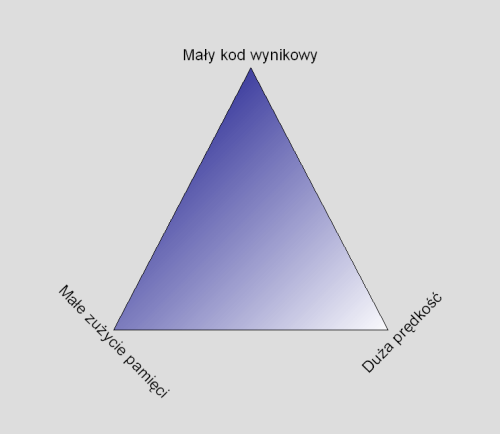

| | Temat wykladu: |
| | C/C : Optymalizacja w C/C (by Gynvael Coldwind, 2007-05-08) @ wyklady.net |
| | Komentarze: http://forum.wyklady.net/index.php?topic=107 |
| 18:04 | Gynvael | Witam wszystkich na moim pierwszym wykladzie w nowym sezonie ;> |
| Gynvael | Wyklad bedzie dotyczyc zagadnien optymalizacji (glownie pod katem szybkosci dzialania) oprogramowania pisanego w C/C++ |
| 18:06 | Gynvael | Jeszcze 3 slowa o mnie, tak w ramach przedstawienia sie... jestem Gynvael Coldwind, pracuje jako reverse engineer i programista w hiszpanskiej firmie zajmujacej sie bezpieczenstwem klientow roznych bankow ;> |
| Gynvael | Obecnie skonczylem studia na politechnice wroclawskiej (informatyka) i czekam na obrone pracy inzynierskiej ;> |
| Gynvael | ok tyle ;> |
| Gynvael | teraz kwestia organizacyjna... |
| Gynvael | pytania na privie, co ciekawsze bede tu przeklejac i odpowiadac |
| 18:07 | Gynvael | na reszte postaram sie odpowiedziec na privie ;> |
| Gynvael | Zaczne od definicji, co to jest optymalizacja... nie bede oryginalny i posluze sie wiki |
| 18:08 | Gynvael | Optymalizacja to metoda wyznaczania najlepszego rozwišzania (poszukiwanie ekstremum funkcji) z punktu widzenia okreslonego kryterium (wskaznik) jakosci (np. kosztu, drogi, wydajnosci). |
| Gynvael | (będzie głównie o optymalce pod wzgledem predkosci) |
| Gynvael | w stosunku do oprogramowania mowimy tak na prawde o trzech wariantach optymalizacji: |
| Gynvael |  |
| 18:09 | Gynvael | - optymalizacja pod wzgledem predkosci dzialania, czyli stanowczo najpopularniejsza ;> |
| Gynvael | - optymalizacja pod wzgledem zuzycia pamieci, tzn tak zeby oprogramowanie zuzywalo jej jak najmniej |
| Gynvael | - oraz optymalizacja pod wzgledem wielkosci kodu (i/lub danych) |
| 18:10 | Gynvael | Trojkat na powyzszym obrazku nalezy interpretowac w nastepujacy sposob: |
| Gynvael | Czym bardziej zblizamy sie do ktoregos z rogow trojkata, tym bardziej oddalamy sie od reszty |
| 18:11 | Gynvael | Przykladowo, jesli chcemy uzyskac duza predkosc dzialania, to prawdopodobnie bedziemy musieli naduzyc kodu (patrz loop unrolling o ktorym bedzie troszke pozniej), lub np pamieci (patrz lookup tables o ktorych tez bedzie pozniej) |
| 18:12 | Gynvael | Idac w druga strone, jesli chcemy miec maly kod wynikowy, to prawdopodobnie bedziemy musieli skorzystac np. z kompresji, a dekompresja szybka nigdy nie byla, po za tym zuzywa troche pamieci |
| 18:13 | Gynvael | Teraz takie odpowiedz na takie male pytanie.. po co w zasadzie optymalizowac |
| Gynvael | Po co optymalizowac wielkosc kodu ? |
| Gynvael | Albo inaczej, kiedy warto/trzeba ? |
| 18:14 | Afro_PL | kiedy kod jest zbyt duzy i wydluza czas pracy |
| Gynvael | - jesli piszemy pod bardzo specyficzna platforme na ktorej jest bardzo malo miejsca na kod |
| MeMeK | dawno sie zaczelo? |
| Gynvael | np chcemy napisac nowy BIOS z super mega ficzerami na stary komp ktory ma kostki po 4kb... auc |
| 18:15 | Gynvael | MeMeK 10 minut temu |
| Gynvael | albo piszemy shellcode do wysploitowania jakiegos progsa a bufor (z roznych przyczyn) ma dokladnie 256 bajtow... |
| Gynvael | - for fun... |
| 18:16 | Gynvael | przykladem for fun moze byc demoscena na ktorej bardzo popularne sa produkcje typu intro4k czy intro64k |
| Gynvael | warto rzucic okiem np na http://awards.scene.org/ |
| 18:17 | Gynvael | innym przykladem moze byc gra .kkrieger, zajmujaca ponizej 100kb, a grafika doroownujaca takim produkcja jak Unreal czy nawet Unreal 2 |
| Gynvael | http://www.theprodukkt.com/ |
| 18:18 | Gynvael | po za tym czasem na ircu zbierze sie grupa ludzi i mysli jak cos napisac tak zeby dostac jak najmniejsza ilosc kodu wynikowego |
| Gynvael | przykladowo w przeciagu ostatniego roku bralem udzial w dwoch takich konstruktywnych -zabawach- ;> |
| Gynvael | pierwsza polegala na napisaniu procedury zmiany wartosci (int) na string'a zapisanego w HEX'a |
| Gynvael | czyli np 123 na 7B |
| 18:19 | Gynvael | z tego co pamietam to udalo nam sie zejsc ponizej 20 bajtow |
| Gynvael | ostatnio za sprawa fr3m3na tworzylismy kompilatory jezyka Brainfuck, tak zeby byly jak najmniejsze |
| Gynvael | adam_i uzyskal wynik 126 bajtow |
| 18:20 | Gynvael | ok dalej |
| Gynvael | Po co optymalizowac pod wzgledem wielkosci uzywanej pamieci |
| Gynvael | - pamiec nawet teraz jest ograniczona... caszem piszemy jakies wieeelkie obliczenia ktore najchetniej by zjadly 20gb ramu.. jako ze nie kazdy tyle ma, to trzeba optymalizowac |
| 18:21 | Gynvael | - na niektorych systemach wbudowanych (embedded) pamieci nie ma za duzo, przykladem moga byc na przyklad komoorki ktore dopiero ostatnio maja wiecej niz 1mb pamieci |
| Gynvael | skala optymalizacji tutaj jest tak na prawde rozna |
| 18:22 | Gynvael | mozemy czasem walczyc o 1gb |
| Gynvael | a innym razem o 5 bajtow |
| Gynvael | A po co optymalizowac jesli chodzi o szybkosc ? |
| Gynvael | to chyba kazdy wie ;> jednak lepiej miec 100 fps w Quake 3 niz 15 ;> |
| 18:23 | Gynvael | niektorzy nieslusznie uwazaja ze skoro mamy super sprzety to nie trzeba optymalizowac |
| Gynvael | nie jest to do konca prawda ;> |
| Gynvael | sprzet jest szybki, ale jeszcze nie na tyle by mozna kompletnie zaniedbac optymalizacje |
| Gynvael | przykladem moze byc raytracing i rendering np w takim 3D Max |
| 18:24 | Gynvael | szybszy sprzet co najwyzej liniowo poprawi czas renderowania |
| Gynvael | zamiast 1h bedziemy czekac 30 minut |
| Gynvael | ale jesli ktos z programistow wpadnie na jakis pomysl co mozna dobrze zoptymalizowac |
| Gynvael | to to 1h moze zejsc i do 2 minut |
| 18:25 | Gynvael | Teraz takie dwie wazne rzeczy jesli chodzi o optymalizacje |
| Gynvael | najpierw cytat (by Donald Knuth): "przedwczesna optymalizacja jest zrodlem wszelkiego zla" |
| Gynvael | chodzi glownie o to ze optymalizacja na pewno nie poprawia czytelnosci kodu, ani dla nas, ani dla kompilatora |
| Gynvael | (mowie o tej recznej) |
| 18:26 | Gynvael | ciekawostka od darkjames'a |
| Gynvael | <darkjames> http://www.catb.org/~esr/writings/taoup/html/ch12s01.html |
| Gynvael | <darkjames> [113] The eighteen-month doubling time usually quoted for Moore's Law implies that you can collect a 26% performance gain just by buying new hardware in six months. |
| Gynvael | ;> |
| Gynvael | ona dotyczy w sumie drugiej rzeczy |
| Gynvael | mianowicie czasem po prostu nie warto optymalizowac |
| 18:27 | Gynvael | jesli koszt wynajecia programisty ktory przeprowadzi optymalizacje jest wiekszy niz spodziewany zysk |
| Gynvael | to po prostu nie warto tego robic |
| 18:28 | Gynvael | Co do samej optymalizacji |
| Gynvael | to optymalizowac mozemy na roznych poziomach |
| Gynvael | na samej gorze jest optymalizacja ktora wykonujemy juz na poziomie projektowania oprogramowania |
| Gynvael | w momencie kiedy decydujemy np ze uzyjemy C++ bo jest szybszy niz Java |
| 18:29 | Gynvael | czy Java bo ma mniejsze binarki niz VB |
| Gynvael | niz JPG bo zajmuje mniej miejsca niz BMP |
| Gynvael | pozniej, w momencie planowania implementacji |
| Gynvael | (lub pozniej w ramach procesu optymalizacji) |
| 18:30 | Gynvael | przychodzi moment wyboru algorytmu |
| 18:31 | Gynvael | musimy byc swiadomi w tym momencie tego ze np sortowanie babelkowe sie pisze szybko milo i przyjemnie |
| Gynvael | ale jest duzo wolniejsze niz np quick sort |
| Gynvael | musimy byc rowniez swiadomi ze radix sort moze byc szybszy niz quick sort ;> |
| 18:32 | Gynvael | na koncu mamy optymalizacje na poziomie implementacji |
| Gynvael | a w zasadzie dwa rodzaje |
| Gynvael | pierwszy polega na stosowaniu znanych sztuczek dzialajacych w danym jezyku (language-specific) |
| 18:33 | -!- | Netsplit krakow.ircnet.pl <-> katowice.ircnet.pl quits: _m, d0b0c0p, Requel |
| Gynvael | a drugi na zblizenie sie do platformy na ktora piszemy, wykorzystanie jej mozliwosci poprzez sformuowanie kodu w najbardziej optymalny dla niej sposob (np wykorzystanie pipeliningu, SSE) |
| 18:34 | Gynvael | musimy jednak pamietac ze zbytnie zblizenie sie do platformy bardzo utrudnia przenoszenie programow pozniej |
| 18:36 | Gynvael | SSE <=- chodzilo mi o Streaming SIMD Extension, czyli rozszerzenie procesora wspomagajace powtarzajace sie operacje na duzych partiach danych (technicznie wyglada to tak ze naraz sie robi np dodawania na 4rech floatach zamiast na jednym) |
| Gynvael | SSE, MMX, etc to temat na oddzielnny wyklad wiec sie zaglebial nie bede |
| Gynvael | ok koniec teorii ;> |
| 18:37 | Gynvael | Reszta wykladu bedzie poswiecona optymalizowaniu pod wzgledem szybkosci dzialania |
| -!- | Netsplit torun.ircnet.pl <-> katowice.ircnet.pl quits: _m, d0b0c0p, Requel |
| Gynvael | Wiec tak, po pierwsze istnieja programy ulatwiajace lokalizowanie miejsc ktore trzeba zoptymalizowac |
| 18:38 | Gynvael | Sa to tzw profilery... do pakietu gcc jest dostepny profiler gprof |
| Gynvael | po za tym Intel wydal swoj VTune (niestety platny, ale mozna eval. version sciagnac) |
| Gynvael | dodatkowo pod *nixy zostal stworzony profiler Valgrind |
| 18:39 | Gynvael | taki profiler zazwyczaj umie wskazac ktora funkcja jest najwiecej razy wywolywana, ktora na najdluzszy okres czasu "zjada" procesor etc |
| 18:40 | Gynvael | oprocz profilerow warto miec swoje jakies procedurki ktore mierza czas / ilosc cykli procesora |
| Gynvael | na potrzeby tego wykladu bede stosowal http://vexillium.org/~gynvael/opt/rtdsc.c oraz http://vexillium.org/~gynvael/opt/speed.h |
| 18:41 | Gynvael | rtdsc.c zawiera wrapper na polecenie RTDSC ktora zwraca ilosc wykonanych do tej pory cykli procesora |
| 18:42 | Gynvael | speed.h zawiera funkcje tcount()... w momencie drugiego wywolania funkcji na STDERR pojawia sie informacje ile czasu minelo od poprzedniego wywolania tcount() |
| Gynvael | rtdsc() bede uzywal do obliczenia roznicy przed i po rozpoczeciu kodu |
| Gynvael | obie te metody NIE SA obiektywne, a tym bardziej precyzyjne |
| Gynvael | natomiast wystarczaja zeby odpowiedziec na pytanie "czy kod dziala szybciej" |
| 18:44 | Gynvael | bart^xt zauwazyl ze rtdsc moze klamac na wieloprocesorowych stacjach |
| Gynvael | ;> |
| 18:45 | Gynvael | niemniej jednak na kompie na ktorym teraz -siedze- mam jeden core, wiec wyniki ktore bede podawac beda wmiare ok ;> |
| Gynvael | rtdsc ofc jest platform-specyfic... tzn x86 |
| Gynvael | ;> |
| Gynvael | dobra |
| 18:46 | Gynvael | a teraz bedzie krotka lista wmiare standardowych trikow na zoptymalizowanie kodu, wraz z przykladami i pomiarami |
| 18:47 | Gynvael | 1. Lookup table |
| Gynvael | http://vexillium.org/~gynvael/opt/opts4.c |
| Gynvael | sytuacja wyglada tak |
| 18:48 | Gynvael | mamy jakies 'j' ktore jest zmienne i przyjmuje wartosci od 0 do 25 |
| 18:49 | Gynvael | w zaleznosci od tego co przyjmie 'j', do zmiennej 'g' dodajemy jakas wartosc |
| 18:50 | Gynvael | musimy sprawdzic co 'j' przyjelo i odpowiednio zareagowac |
| Gynvael | w kodzie jest switch/case |
| Gynvael | kod jest wykonywany 100mln razy, tak zeby bylo co mierzyc |
| Gynvael | TICKS: 000001578 TIME: 1.57800 sec |
| Gynvael | RDTSC DIFF: 2360008915 |
| Gynvael | u mnie kod wykonuje sie 'tyle' |
| Gynvael | pytanie brzmi 'jak mozna to zoptymalizowac' |
| 18:51 | Gynvael | niektorzy ucza zeby zamiast 'switch/case' dac else/if, ale to jest zly pomysl;> o tym za chwile |
| Gynvael | mozna jednak stworzyc tablice z wartosciami |
| Gynvael | i zrobic tablica[j % 26] |
| Gynvael | a dokladniej g += tablica[j % 26]; |
| Gynvael | zaoszczedzi to paru porownan i paru skokow |
| 18:52 | Gynvael | http://vexillium.org/~gynvael/opt/opts5.c |
| Gynvael | tak wyglada zoptymalizowany kod |
| Gynvael | TICKS: 000001468 TIME: 1.46800 sec |
| Gynvael | RDTSC DIFF: 2191607761 |
| Gynvael | i faktycznie wykonuje sie odrobine szybciej |
| Gynvael | powstaja dwa pytania |
| 18:53 | Gynvael | 1) czemu tylko tyle |
| Gynvael | 2) czemu nie if/else |
| Gynvael | 1) <=- nowoczesne kompilatory w przypadku switch i wartosci kolejnych tworza tak zwane jump tables, czyli tablice z pointerami adresow |
| Gynvael | i w domysle wykonywane jest goto adres_skoku[j % 16] |
| 18:54 | Gynvael | a to jest po prostu szybkie, jako ze jedyne porownanie jakie kompilator tam wrzuci to czy j nie jest czasem mniejszy od 0 lub wiekszy od 26 |
| Gynvael | % 26 tam |
| Gynvael | * 25 |
| 18:55 | Gynvael | 2) a zapiszmy to za pomoca if/else i zobaczmy |
| Gynvael | http://vexillium.org/~gynvael/opt/opts6.c |
| Gynvael | TICKS: 000003953 TIME: 3.95300 sec |
| Gynvael | RDTSC DIFF: 1621625649 |
| Gynvael | auc, ponad 2 razy gorzej |
| Gynvael | kompilator domyslnie przerobi to na serie sprawdzen i skokow |
| Gynvael | a to szybkie nie jest |
| 18:56 | Gynvael | czasem jednak trafimy na kompilator ktory jest przyglupawy i nie umie w przypadku switcha zrobic jump table |
| Gynvael | wtedy mozemy sprobowac zrobic if/elseif, ale w sposob przypominajacy drzewo |
| Gynvael | na poczatek, podzielmy te wszystkie ify na czesc mniejsza od 13 i reszte |
| 18:57 | Gynvael | http://vexillium.org/~gynvael/opt/opts7.c |
| Gynvael | TICKS: 000003187 TIME: 3.18700 sec |
| Gynvael | RDTSC DIFF: 495542677 |
| Gynvael | jak widac jest lepiej |
| Gynvael | idzmy o krok dalej i zromy kolejne podzialy |
| 18:58 | Gynvael | http://vexillium.org/~gynvael/opt/opts8.c |
| Gynvael | jak widac teraz dodatkowo dzielone jest na galaz mniejsza od 6 i reszte |
| Gynvael | oraz mniejsza od 19 i reszte |
| Gynvael | podzial na <13 nadal zostal |
| Gynvael | TICKS: 000002765 TIME: 2.76500 sec |
| Gynvael | RDTSC DIFF: 4130054772 |
| 18:59 | Gynvael | 2.765sec jest lepsze niz 3.953 |
| Gynvael | mozna isc z tym podzialem dalej |
| Gynvael | ale niestety nie zblizymy sie ani do switch/case opartego na jump table |
| Gynvael | ani do lookup table |
| 19:00 | Gynvael | niemniej jednak warto o tym pamietac |
| Gynvael | ok dalej ;> |
| 19:01 | Gynvael | 3. (2 byla optymalizacja ifow) "aliasy" na parametry przekazywane pointerem |
| Gynvael | http://vexillium.org/~gynvael/opt/opts9.c |
| Gynvael | mamy taka sytuacje |
| 19:02 | Gynvael | mamy funkcje func() ktora dostaje inta, przekazywanego pointerem |
| Gynvael | nastepnie 100mln razy przekazyje tego wartosc wskazywana przez ten pointer do funkcji dodaj |
| Gynvael | TICKS: 000000937 TIME: 0.93700 sec |
| Gynvael | RDTSC DIFF: 1420670838 |
| Gynvael | problemem tutaj tak na prawde jest to ze "*sth" wykonuje sie 100mln razy |
| 19:03 | Gynvael | czyli 100mln razy procesor musi sprawdzic jaka wartosc ma pointer sth (tj odczytac ja z pamieci) a nastepnie odczytac z pamieci inta wskazyywanego przez sth |
| Gynvael | rozwiazaniem problemu jest stworzenie zmiennej lokalnej ktora raz na poczatku funkcji dostanie wartosc *sth |
| Gynvael | a potem bedziemy uzywac tejze zmiennej zamiast *sth |
| 19:04 | Gynvael | http://vexillium.org/~gynvael/opt/opts10.c |
| Gynvael | TICKS: 000000875 TIME: 0.87500 sec |
| Gynvael | RDTSC DIFF: 1317263034 |
| Gynvael | 0.06 sec szybciej, nieduzo, ale zawsze cos |
| 19:05 | Gynvael | nalepszy pameitac ze czasami liczymy czas obliczeniowy w godzinach, i to by moglo byc np 87 zamiast 93 godzin ;> |
| Gynvael | 6 godzin juz robi roznice ;> |
| Gynvael | 4. Natywne slowo maszyny |
| 19:06 | Gynvael | jakos tak sie przyjelo ze WORD to 16 bitow, ale jest to w sumie niezgodne z prawda |
| Gynvael | WORD jest typem natywnym dla danej platformy |
| Gynvael | pod dosem bylo to 16 bitow |
| Gynvael | pod winda slowo ma juz 32 lub nawet 64 bity |
| Gynvael | operujac na natywnej wielkosci zmiennej (czyli na natywnym WORD) program dziala szybciej niz na wielkosciach mniejszych |
| 19:08 | Gynvael | wezmy za przyklad jakas petle i wrzucmy w nia troche obliczen arytmetycznych |
| Gynvael | siedze na maszynie 32 bitowej wiec jako odnosnik uzyje int'a |
| Gynvael | http://vexillium.org/~gynvael/opt/opts12.c |
| 19:09 | Gynvael | TICKS: 000002797 TIME: 2.79700 sec |
| Gynvael | RDTSC DIFF: 4188994405 |
| Gynvael | ok, to teraz wrzuce zamiast int np short "bo jest mniejszy wiec szybciej bedzie sie liczyc" (wniosek nieprawdziwy, ale czesto wysnuwany) |
| Gynvael | http://vexillium.org/~gynvael/opt/opts11.c |
| Gynvael | TICKS: 000003171 TIME: 3.17100 sec |
| Gynvael | RDTSC DIFF: 461919159 |
| Gynvael | huh, wolniej |
| Gynvael | no to "char" |
| 19:10 | Gynvael | http://vexillium.org/~gynvael/opt/opts13.c |
| Gynvael | TICKS: 000003109 TIME: 3.10900 sec |
| Gynvael | RDTSC DIFF: 361602909 |
| Gynvael | szybciej, ale nadal wolno... |
| Gynvael | wniosek: int jest na prawde natywny dla maszyny, wiec jest szybszy |
| 19:11 | Gynvael | DeeTahPanLtah: Bita ? ;> nieee my nie bedziemy Bili intow zeby je przyspieszyc ;> |
| Gynvael | ok dalej |
| Gynvael | 5. ALU > FPU |
| 19:12 | Gynvael | ALU, czyli jednostka arytmetyczna od operacji na liczbach naturalnych/calkowitych jest szybszy niz FPU (czyli jednotska od floatow i double) |
| Gynvael | test ? |
| Gynvael | zmienmy w powyzszych przykladach int na float |
| Gynvael | http://vexillium.org/~gynvael/opt/opts14.c |
| 19:13 | Gynvael | chcecie to odpalcie ;> |
| Gynvael | przed wykladem i sie 92 sekundy to wykonywalo |
| Gynvael | hehe |
| 19:14 | Gynvael | jesli chodzi o precyzje obliczen |
| Gynvael | to float jest oczywiscie szybszy niz double |
| Gynvael | a double niz long double |
| 19:15 | Gynvael | Zdecydowanie najgorsza sytuacja jest gdy nie ma normalnego koprocesora FPU, i wszystkie floatingi sa emulowane |
| Gynvael | wtedy mozemy zapomniec wogoole o uzywaniu floatow |
| 19:16 | Gynvael | zreszta, jesli mamy mozliwosc i nie potrzebujemy mega precyzji, to mozna sie przerzucic z floatow na inty |
| Gynvael | i powiedzmy dedykowac jeden bajt dla "liczby po przecinku" |
| Gynvael | a pozostale 3 na czesc "przed przecinkiem" ;> |
| 19:17 | Gynvael | 6. Loop jamming |
| Gynvael | loop jamming to po prostu laczenie petli |
| Gynvael | http://vexillium.org/~gynvael/opt/opts15.c |
| Gynvael | TICKS: 000000984 TIME: 0.98400 sec |
| Gynvael | RDTSC DIFF: 1466389555 |
| Gynvael | polaczenie petli w jedna |
| Gynvael | daje lepszy rezultat |
| Gynvael | http://vexillium.org/~gynvael/opt/opts16.c |
| Gynvael | TICKS: 000000562 TIME: 0.56200 sec |
| Gynvael | RDTSC DIFF: 823512458 |
| 19:18 | Gynvael | jest to w sumie logiczne i oczywiste |
| Gynvael | natomiast jest przypadek |
| Gynvael | kiedy dwie petle sa jednak szybsze niz jedna |
| Gynvael | mianowiscie jesli kodu w petli jest duuuzo |
| Gynvael | wtedy rozbicie na dwie petle moze dac lepszy efekt (ma to zwiazek z cachowaniem procka etc) |
| 19:19 | Gynvael | 7. Loop unroling |
| Gynvael | to w sumie jest najstarsza technika pod sloncem ;> |
| Gynvael | http://vexillium.org/~gynvael/opt/opts1.c |
| Gynvael | mamy sobie duza tablie (20mln intow) |
| Gynvael | i chcemy ja zsumowac |
| 19:20 | Gynvael | najprostsze rozwiazanie to dodanie kazdego elementu w petli, jeden po drugim |
| Gynvael | TICKS: 000000203 TIME: 0.20300 sec |
| Gynvael | RDTSC DIFF: 307088127 |
| Gynvael | loop unrolling polega na "rozwinieciu" petli w ten sposob zeby zamiast jednego dodawania w ciele byly np 4, i zeby zamiast i++ bylo i+=4 |
| Gynvael | http://vexillium.org/~gynvael/opt/opts2.c |
| 19:21 | Gynvael | TICKS: 000000171 TIME: 0.17100 sec |
| Gynvael | RDTSC DIFF: 255730705 |
| 19:22 | Gynvael | dlaczego tak jest ? zamiast 4rech i++ mamy jedno i+=4, i zamiast 4rech i < WIELKSOC mamy jedno |
| Gynvael | 8. Pipelining |
| Gynvael | to jest juz typowe platform-spec |
| Gynvael | mianowicie CPU ktore wiekszosc z nas ma w swoich kompach moze wykonac kilka operacji naraz |
| 19:23 | Gynvael | pod warunkiem ze te operacje nie wymagaja nawzajem swoich wartosci |
| Gynvael | http://vexillium.org/~gynvael/opt/opts3.c |
| Gynvael | wezmy pod uwage taki kod |
| Gynvael | petla nadal rozwinieta |
| Gynvael | ale sumujemy do 4rech roznych zmeinnych |
| Gynvael | a na koncu po petli je dodajemy do siebie |
| 19:24 | Gynvael | dzieki temu sa to 4ry oddzielne operacje |
| Gynvael | ktore moga byc wykonane jednoczesnie |
| Gynvael | TICKS: 000000156 TIME: 0.15600 sec |
| Gynvael | RDTSC DIFF: 214483353 |
| 19:25 | Gynvael | 9. Pointery |
| Gynvael | <reqamst> dlaczego cpu automatycznie opts2 nie zrobi takiego triku w opts3? |
| 19:26 | Gynvael | poniewaz w opts2 mamy 4ry razy uzyte sum +=.. wiec druga linia z sum += wymaga wyniku z pierwszej |
| Gynvael | w przypadku opts3 sum2 nie wymaga wyniku sum1 |
| Gynvael | wiec nie musi na niego 'czekac' |
| 19:27 | Gynvael | ok |
| Gynvael | dalej |
| Gynvael | to w sumie blad robiony przez poczatkujacych |
| 19:28 | Gynvael | http://vexillium.org/~gynvael/opt/opts17.c |
| Gynvael | mamy funkcje |
| Gynvael | ktora potrzebuje pointer |
| Gynvael | *ktora potrzebuje strukture |
| Gynvael | blad polega na tym ze przekazujemy strukture cala |
| Gynvael | i jest ona caaala kopiowana |
| Gynvael | mimo iz nie korzystamy z niej calej |
| 19:29 | Gynvael | TICKS: 000001375 TIME: 1.37500 sec |
| Gynvael | RDTSC DIFF: 2070562285 |
| Gynvael | gdybysmy skorzystali z pointera do przekazania structa |
| Gynvael | http://vexillium.org/~gynvael/opt/opts18.c |
| 19:30 | Gynvael | TICKS: 000000985 TIME: 0.98500 sec |
| Gynvael | RDTSC DIFF: 1487939201 |
| Gynvael | rezultat byl by lepszy |
| Gynvael | wracajac do loop unrolling |
| Gynvael | <mik01aj> mam pytanko... czy to, ze rozwinelismy dokladnie 4 cykle petli ma znaczenie? czy dla 5 wynik bylby podobny? |
| 19:31 | Gynvael | to kwestia poeksperymentowania |
| Gynvael | slyszalem rozne wersje, niektorzy polecali zeby do 4rech rozwijac |
| Gynvael | inni do 8 |
| Gynvael | warto sie tym pobawic i samemu okreslic ;> |
| 19:32 | Gynvael | 10. Prekalkulacja wynikow / cache'owanie wynikow |
| Gynvael | co do cacheowania wynikow, @ przykald z sumowaniem (Ten w loop unroll uzyty) |
| 19:33 | Gynvael | zalozmy ze takie sumowanie bylo by robione bardzo czesto |
| Gynvael | wtedy warto by zrobic to tylko raz, a potem pamietac wynik |
| Gynvael | i w miare zmian, aktualizowac ta sume |
| Gynvael | wtedy nie trzeba by jej znowu przeliczac |
| Gynvael | ;> |
| Gynvael | a co do reszty |
| 19:34 | Gynvael | wezmy jakas wolna operacja matematyczna... |
| Gynvael | hmm |
| Gynvael | hmm |
| Gynvael | sinus ;> |
| Gynvael | sinus, realizowany przez instrukcje FPU FSIN jest wolny |
| Gynvael | http://vexillium.org/~gynvael/opt/opts19.c |
| Gynvael | zalozmy ze musimy duuuzo razy jakas wartosc sinusa policzyc |
| Gynvael | TICKS: 000001796 TIME: 1.79600 sec |
| Gynvael | RDTSC DIFF: 2679071545 |
| 19:35 | Gynvael | zalozmy rowniez ze nie potrzebujemy wszystkich mozliwych katow |
| Gynvael | sin(0.00), sin(0.01), sin(0.02) etc co 0.01 nam wystarczy |
| Gynvael | mozna stworzyc tablice z wartosciami sin dla wszystkich tych wartosci |
| 19:36 | Gynvael | taka gdzie beda zapisane juz wczesniej wyliczone wyniki |
| Gynvael | tablica nie bedzie bardzo duza |
| Gynvael | http://vexillium.org/~gynvael/opt/opts20.c |
| Gynvael | wtedy zamiast f = sin(kat) bedziemy robic |
| Gynvael | f = sintab[314]; //sinf(3.14f); |
| Gynvael | czyli f = sintab[(int)(kat * 100)]; |
| Gynvael | TICKS: 000000093 TIME: 0.09300 sec |
| Gynvael | RDTSC DIFF: 139743015 |
| 19:37 | Gynvael | 1.796 vs 0.093 |
| Gynvael | roznica niemala |
| Gynvael | ta metoda jest czesto w grach wykorzystywana |
| 19:38 | Gynvael | hmm |
| Gynvael | czas sie powoli konczy |
| 19:39 | Gynvael | ale jeszcze o kilku metodach chcial bym powiedzeic |
| Gynvael | 11. wielowymiarowe tablice |
| Gynvael | jesli chcemy policzyc sume z wielowymiarowej tablicy |
| Gynvael | np |
| Gynvael | int dane[2000][1000]; |
| Gynvael | to NIE robimy tak: |
| 19:40 | Gynvael | http://vexillium.org/~gynvael/opt/opts21.c |
| Gynvael | TICKS: 000002750 TIME: 2.75000 sec |
| Gynvael | RDTSC DIFF: 4094346580 |
| Gynvael | bledem tutaj jest iteracja po kolumnach zamiast po wierszach |
| Gynvael | baaardzo to psuje cache'owanie procesorowi |
| Gynvael | poprawna wersja, czyli najpierw wiersze |
| Gynvael | to |
| Gynvael | http://vexillium.org/~gynvael/opt/opts22.c |
| Gynvael | TICKS: 000001312 TIME: 1.31200 sec |
| Gynvael | RDTSC DIFF: 1981093587 |
| 19:41 | Gynvael | pewne zrodla twierdza ze dobrze jest aby wiersz mial dlugosc potegi 2jki, nawet jesli to bedzie sie wiazalo z nadmiarowoscia |
| Gynvael | http://vexillium.org/~gynvael/opt/opts23.c |
| Gynvael | TICKS: 000001312 TIME: 1.31200 sec |
| Gynvael | RDTSC DIFF: 1959388872 |
| Gynvael | w moim przypadku nie robi to jednak duzej roznicy |
| Gynvael | natomiast mozemy splaszczyc ta tablice |
| Gynvael | tak zeby zamiast [2000][1000] otrzymac [2000*1000] |
| 19:42 | Gynvael | http://vexillium.org/~gynvael/opt/opts24.c |
| Gynvael | TICKS: 000001171 TIME: 1.17100 sec |
| Gynvael | RDTSC DIFF: 1742240367 |
| 19:44 | Gynvael | ok |
| Gynvael | jeszcze teraz kilka porad, juz bez przykladow |
| Gynvael | - rekusja jest zla, nie uzywac, za duzo czasu sie traci na wywolanie funkcji |
| 19:45 | Gynvael | - jesli musimy czesto dzielic floata przez okreslona stala wartosc, lepiej wyliczyc wyrazenie 1.0f / wartosc wczesniej, i mnozyc przez nie |
| Gynvael | - puts jest szybsze od printf, ale oczywiscie mniej elastyczne ;> |
| 19:46 | Gynvael | - jesli mamy plik z danymi, pliki binarne wymagaja mniej przetwarzania niz pliki tekstowe |
| Gynvael | - inline czasami nie dziala, #define zawsze |
| Gynvael | - w niektorych systemach jest funkcja mallopt gdzie mozemy ustawic opcje MAXFAST, wtedy alokacja pamieci via malloc dziala szybko |
| 19:47 | Gynvael | ad rekursja .. tak chodzi o rekurncje ;> |
| Gynvael | - jesli mamy petla { funkcja() }, to warto to zmeinic na funkcja() { petla { } } |
| 19:48 | Gynvael | - cache w CPU jest podzielony na male bloczki... jesli trzymamy zmienne z ktorych czesto korzystamy "blisko siebie" w pameici, wtedy jest wieksza szansa ze CPU ma ten bloczek z obydwoma (wieksza liczba) tymi zmiennymi scachowany.. struct sie klania ;> |
| 19:49 | Gynvael | - jesli mamy kilka warunkow w if... if(a && b && c).. to pierwszy powinien byc ten ktory NAJCZESCIEJ jest FALSZYWY, w przypadku if(a || b || c) pierwszy powinien byc ten ktory jest najczesciej PRAWDZIWY |
| Gynvael | (wtedy pozostale nie sa sprawdzane) |
| Gynvael | - jesli sie ma klika prockow / rdzeni, warto pomyslec o multi threadingu ;> |
| 19:50 | Gynvael | - warto znac swoj kompilator, i jego opcje.. -O3... etc.. kompilator bardzo duzo rzeczy zoptymalizuje sam.. ale nie wszystko |
| 19:51 | Gynvael | - kompilator lepiej optymalizuje jeden duzy plik niz ten sam kod rozbity na kilka malych plikow (glownie o wielkosc kodu tu chodzi)... np w projekcie ReactOS przed kompilacja lacza wszystkie zrodla danego modulu w jeden |
| 19:52 | Gynvael | - optymalizacja na poziomie assemblera i tak zawsze bedzie lepsza, mimo iz kompilatory sa coraz lepsze... jesli chce sie cos zrobic dobrze, trzeba to zrobic samemu.. jesli duzo operujemy na grafice, warto zainteresowac sie SSE, SSE2, SSE3, SSSE3 czy SSE4 ktory ma wyjsc niedlugo, oraz MMX, i obydwoma 3DNow! |
| 19:53 | Gynvael | - rozgalezienia sa zle: |
| Gynvael | if(b > 10) a += 5; else c +=2; jest WOLNIEJSZE niz a += 5; if(b <= 10) { a -= 5; c += 2; } |
| 19:54 | Gynvael | - inicjalizacja wartosci (int a = 5) jest szybsza niz nadawanie wartosci (int a; a = 5;) (chociaz kompilator powinien o to dbac) |
| 19:55 | Gynvael | - kopiowanie kilku bajtow na raz (np poprzez cast tablicy char[] na int*) jest szybsze niz pojedynczych bajtow.. to samo jesli chodzi o porownywanie |
| 19:56 | Gynvael | - i inne ;> |
| Gynvael | temat optymalizacji jest baardzo szeroki, polecam w sumie google jako dobry zbior porad.. ale nie wierzcie we wszystkie ;> warto samemu sprawdzic |
| 19:57 | Gynvael | OK ;> na koniec zrodla |
| Gynvael | http://www.abarnett.demon.co.uk/tutorial.html |
| Gynvael | http://www.tantalon.com/pete/cppopt/main.htm |
| Gynvael | http://www.prism.uvsq.fr/~cedb/local_copies/lee.html |
| Gynvael | http://www.eventhelix.com/RealtimeMantra/Basics/OptimizingCAndCPPCode.htm |
| Gynvael | http://www.rddvs.com/FasterC/ |
| Gynvael | http://www.azillionmonkeys.com/qed/optimize.html |
| Gynvael | http://www.codeproject.com/cpp/C |
| Gynvael | Nie ze wszystkim niestety zdazylem, moze bedzie druga czesc jesli wyrazicie taka potrzebe |
| Gynvael | http://forum.wyklady.net/index.php?topic=107.0 <=- tutaj mozna komentowac i oceniac wyklad |
| 19:58 | Gynvael | jesli ktos by chcial poprowadzic o czyms wyklad to msg defc0n ;> |
| Gynvael | ok tyle ;> dziekuje za wspolnie spedzony czas i zapraszam na kolejne wyklady ;> |